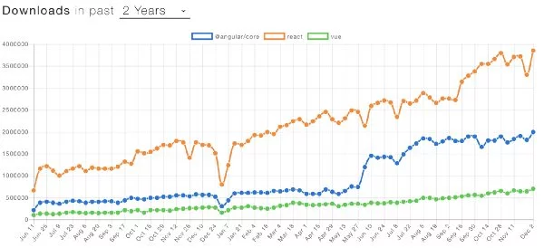
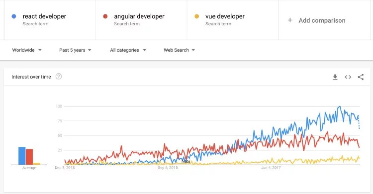

React JS
The JavaScript library
Created by Kernoha Aliaksei
What are we going to speak about today
What is React?
Why is React?
The fundamentals
What is react?
React (also known as React.js or ReactJS) is a JavaScript library for building user interfaces.
A little history
React is a front-end library developed by Facebook. It is used for handling the view layer for web and mobile apps . ReactJS allows us to create reusable UI(User Interface) components. It is currently one of the most popular JavaScript libraries and has a strong foundation and large community behind it.
To be afloat
You should be familiar with
a) HTML
b) CSS
c) JavaScript
d) DOM
e) ES6
f) Node.js
g) npm
Point conclusion
Why is React?
“Numbers are said to rule the world. No, they only show how they rule the world.“
Johann Wolfgang Goethe (1749-1832)
Here are some facts
How popular is React with developers?
 Advantages
a) It is easy to learn
b) It is backed by a strong community
d) It ensures faster rendering
e) It guarantees stable code
...
Recipe of popularity
Point conclusion
The fundamentals
a) The components
b) ES6
c) Props
d) State
The components
A component is one isolated part of an interface

ES6
It is a very convinient tool for a React
it makes a code more "readable" and more effective for a developer
Props
props = properties
const Greetings = (props) => Hey you! {props.firstName} {props.lastName}!;
const App = () => (
Props should not be changed
HTML
Hey you! Brian Warner!
State
State is created in the component
constructor() {
super();
this.state = {
count: 0,
};
}
State
State is changeable
updateCount() {
this.setState((prevState, props) => {
return { count: prevState.count + 1 }
});
}
Review
Prop/State
While props and state both hold information relating to the component, they are used differently and should be kept separate.
Point conclusion
FINALE Conclusion
“When it is hard at learning - it is easy in battle.“
Suvorov Alexander Vasilievich (1730-1800)